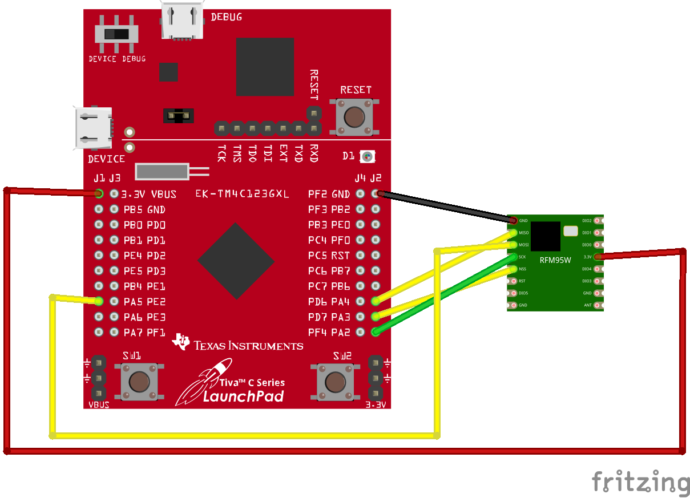

1.0 Software Requirement Document
This document contains all high level requirements for the smart home core
1.1 Definitions
LoRa - Long Range Radio
Tivaware - TI Launchpad Board Support Package
Launchpad - Texas Instruments Launchpad Microcontroller
Pico - Raspberry Pi Pico W (Wifi Enabled) Microcontroller
Pico-sdk - Raspberry Pi Pico Board Support Package
RFM69HWC - Lora Transceiver
1.2 Referenced Documents
messageAPI-ICD - version 1.0
System Testing Control Document - version 1.1
LoraAPI-Ref-Manual - version 1.1
1.3 Conventions
Notes shall be written italic and prefacned with "NOTE"
Document and defintion refrences shall be both bolded and italicized
2.0 Software Requirements
2.1 Sub Systems
Sub Systems are core components of the smart home core and cannot be enabled/disabled
2.1.1 Message API
2.1.1.1 Incoming message handling SWRD001
Incoming message shall be processed and handled immediately as they are received by the module
vnv/system/message_api_system_test.py
Child links: SWDD002 API shall have a method to get messages, SWDD003 API shall have a method to initialize subsystem, SWDD004 API shall have a method to manage key
2.1.1.2 Outgoing message handling SWRD002
Outgoing messages shall be processed and handled immediately as they are requested by the module
vnv/system/message_api_system_test.py
Child links: SWDD001 API shall have a method to send messages, SWDD003 API shall have a method to initialize subsystem, SWDD004 API shall have a method to manage key
2.1.2 Lora API
2.1.2.1 LoRa handling SWRD003
All communication to the RFM69HWC shall be handled through the loraAPI.
Child links: SWDD005 API shall have a method to initialize subsystem, SWDD006 API shall have a method to initialize the lora transceiver to receive continuous data as defined in LoraAPI-Ref-Manual, SWDD007 API shall have a method to initialize the lora transceiver to transmit data as defined in LoraAPI-Ref-Manual, SWDD008 API shall have a method for transmitting a payload as defined in LoraAPI-Ref-Manual
2.1.3 Console API
2.1.3.1 Console Behavior SWRD004
The console interface shall handle user inputs and commands
vnv/system/console_api_system_test.py
Child links: SWDD009 The console API shall interface over USB/UART, SWDD010 The console API shall handle the following commands
2.2 Components
Components are non-core components of the smart home core and can be enabled/disabled
2.3 Module Initialization
2.3.1 Subsystem initilization SWRD005
All systems shall be initialized before launching main loop
2.3.2 Component initilization SWRD006
All components that are configured shall be initialized before launching main loop
2.4 Main Loop
3.0 Hardware Requirements
3.1 Default Wiring Positions for Lora
3.1.1 SWRD007

3.1.2 Pi Pico SWRD008

3.1.3 Pi 3B+ SWRD009

4.0 Testing and Results
4.1 System Testing
A detailed gude for system testing can be found within the System Testing Control Document
4.1.1 Locations SWRD0010
System tests shall be found within the vnv/system directory and results shall be stored in the docs/results directory
4.1.2 Requirements covered SWRD0011
System tests shall be responsible for verifying high level requirements.
4.2 Module Testing
4.2.1 Locations SWRD0012
Module tests shall be found within the vnv/mod directory and results shall be stored in the docs/results directory
4.2.2 Requirements covered SWRD0013
Module tests shall be responsible for verifying low level requirements.
5.0 Requirements
5.1 Publishing Requirements
NOTE: It is assumed that doorstop has been installed previously
To publish requirements run the following from within the /req folder
doorstop publish all ./docs